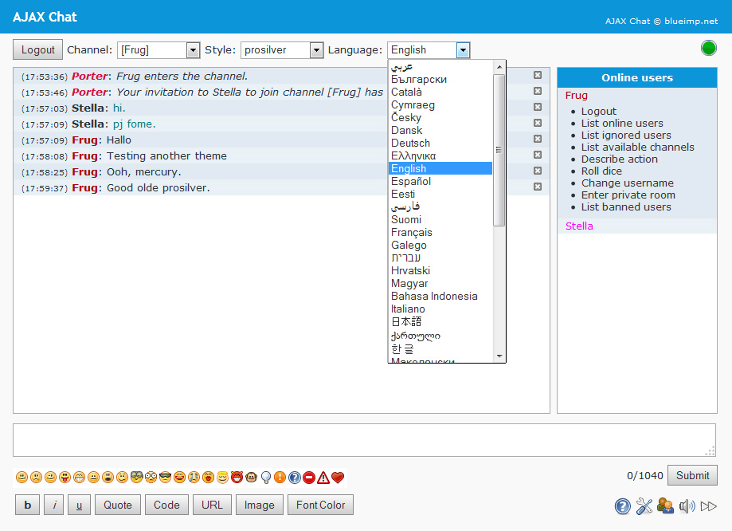
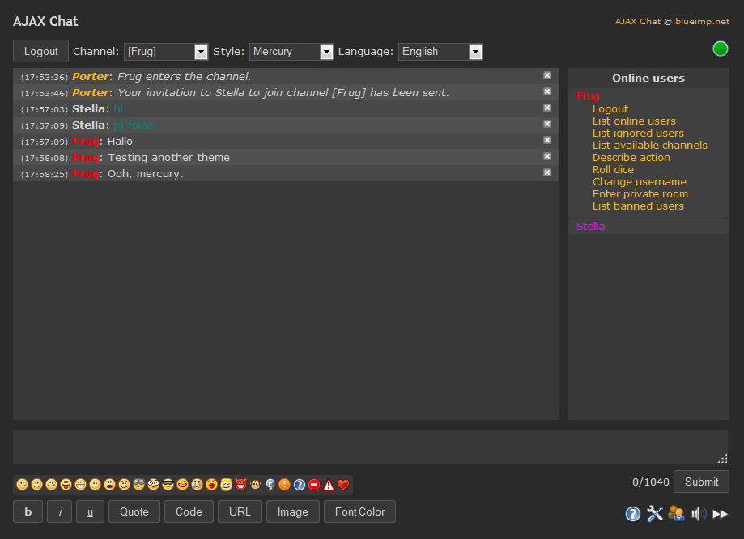
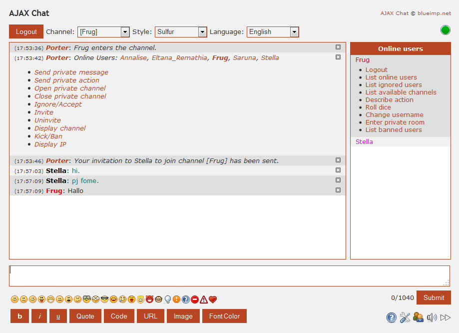
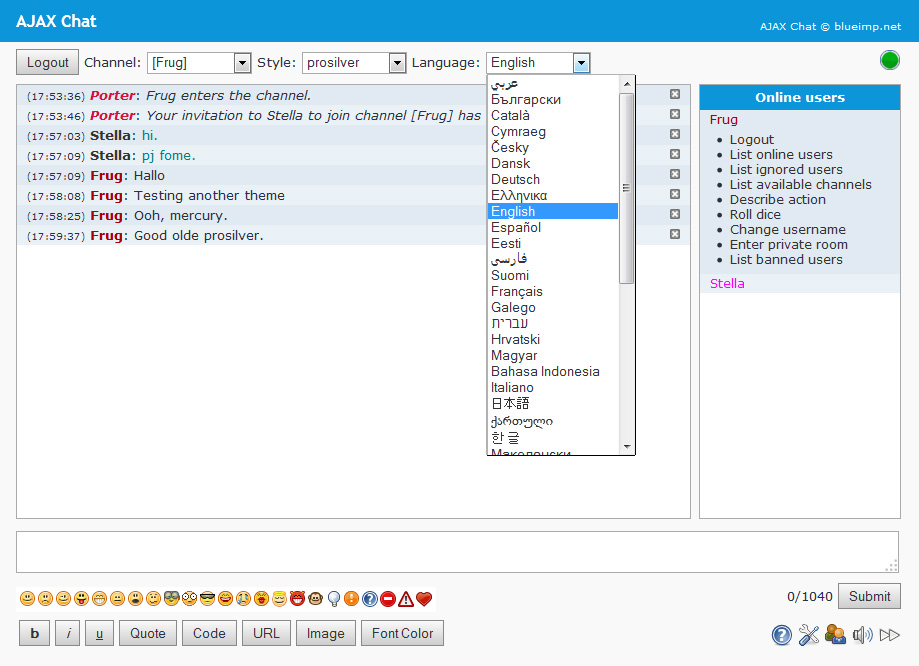
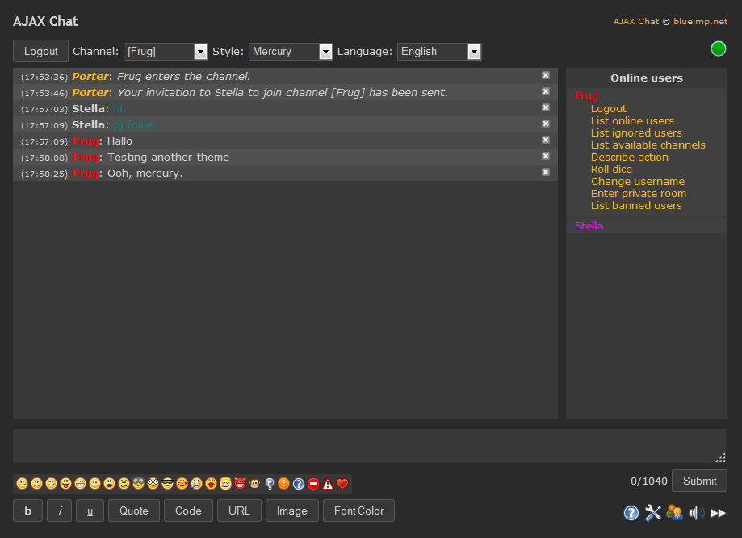
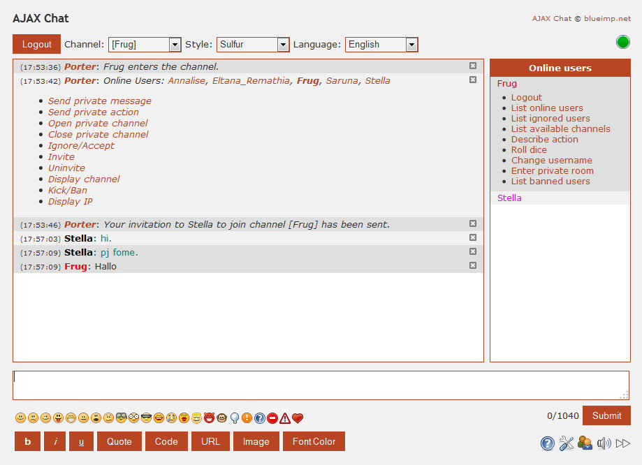

AJAX Chat
AJAX Chat is a free and fully customizable open source web chat implemented in JavaScript, PHP and MySQL which integrates nicely with common forum systems like phpBB, MyBB, PunBB, SMF and vBulletin.
AJAX Chat Screenshots
  
  